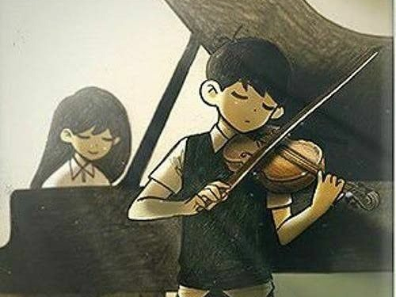

Evelyn Kim
11
School
 I am currently a sophomore at Canyon Crest Academy . Despite the pressure, I have been maintaining a streak of A’s. In addition to my required classes, I have taken classes in Spanish, Orchestra, Computer Science, and Psychology, which are subject areas I have taken a moderate interest in. Outside the academic portion of school, the social portion of my school life is enjoyable. I hang out with my friends during lunch, or with several whom I met through math I do math with, of which I will elaborate on.
I am currently a sophomore at Canyon Crest Academy . Despite the pressure, I have been maintaining a streak of A’s. In addition to my required classes, I have taken classes in Spanish, Orchestra, Computer Science, and Psychology, which are subject areas I have taken a moderate interest in. Outside the academic portion of school, the social portion of my school life is enjoyable. I hang out with my friends during lunch, or with several whom I met through math I do math with, of which I will elaborate on.
Math
 Math is a large part of my life, and has been so since 3rd grade. I took AoPS courses like any other Asian child who was made to by their parents. Unlike those who would zone out, I paid attention to my classes and learned the material well enough to, at 6th grade, qualify for AIME (American Invitational Mathematics Examination). Therefore, I’ve been doing math ever since, participating in the math community with my friends (as CCA is full of math sweats), and winning some awards. I have also been participating in many college competitions (BMT, SMT, HMMT), for which we would fly to Boston or San Francisco.
Math is a large part of my life, and has been so since 3rd grade. I took AoPS courses like any other Asian child who was made to by their parents. Unlike those who would zone out, I paid attention to my classes and learned the material well enough to, at 6th grade, qualify for AIME (American Invitational Mathematics Examination). Therefore, I’ve been doing math ever since, participating in the math community with my friends (as CCA is full of math sweats), and winning some awards. I have also been participating in many college competitions (BMT, SMT, HMMT), for which we would fly to Boston or San Francisco.
Music
 Music is also an extracurricular I’ve been involved in, though not approached with the same enthusiasm as math. I’ve been playing piano since 4 years old and violin since I was 7. I have put a lot of effort into piano and have therefore won competitions through it. In contrast, I have not put much effort into violin and therefore am currently at an intermediate level, at which I am not good enough to participate in competitions. Adding to my various piano accolades, I have for winning first prize in a competition been invited to perform at Disney Hall, and I have performed in charity concerts organized by my piano teacher in partnership with a children’s cancer charity.